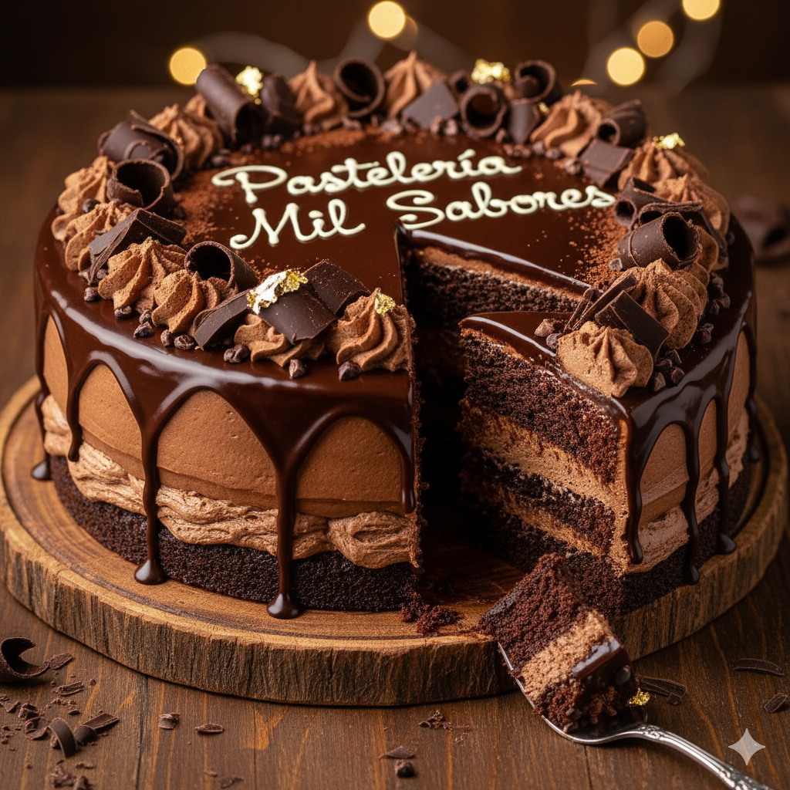

El Secreto de Nuestra Torta de Chocolate
Desde hace 50 años, nuestra torta de chocolate ha sido el corazón de innumerables celebraciones. No es solo un postre; es una historia de familia, tradición y una pizca de magia que se ha perfeccionado a lo largo de cinco décadas.
Todo comenzó con la receta de la abuela Eliana, quien creía firmemente que el secreto no estaba solo en los ingredientes, sino en la paciencia y el cariño. Usamos exclusivamente cacao de origen local, seleccionado a mano por su pureza y aroma, y una mezcla de tres tipos de chocolate belga que le da esa profundidad de sabor inconfundible.
Más que Ingredientes, una Tradición
El proceso es un ritual. El bizcocho se hornea lentamente a baja temperatura para asegurar una textura húmeda y esponjosa. Mientras tanto, preparamos nuestro famoso ganache, batido a mano hasta alcanzar la consistencia perfecta que se derrite en la boca. A diferencia de otras pastelerías, no usamos premezclas ni atajos. Cada torta es una obra de arte que requiere tiempo y dedicación.
Esa es la verdadera esencia de Pastelería Mil Sabores: mantener viva la tradición de la repostería artesanal, para que cada bocado te transporte a un momento de pura felicidad.
Volver al Blog